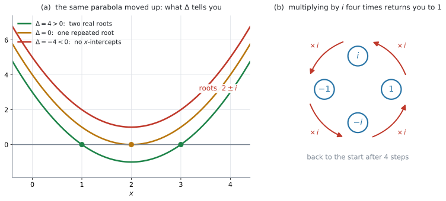

AHL 1.12a — Complex numbers in Cartesian form（複素数と直交形式）
- \(i^{2} = -1\) という約束から出発して、複素数を \(z = a + bi\) の形で書ける。
- real part（実部）と imaginary part（虚部）を、正しく取り出せる。
- conjugate（共役複素数）\(z^{*}\) を書ける。
- 和・差・積を手で計算し、商は conjugate をかけて \(a + bi\) の形に直せる。
- 実数係数の \(2\) 次方程式で \(b^{2}-4ac < 0\) のとき、解を \(a \pm bi\) の形で求められる。
- 累乗や検算を、GDC でできる。
\(2\) つだけ印刷されています。
\[ z = a + bi \tag{1}\]
\[ \Delta = b^{2} - 4ac \tag{2}\]
\(2\) つ目の見出しは「Discriminant」（判別式）です。
さらに、Topic 2 の「Prior learning – HL」の欄に、解の公式そのものが載っています。
\[ ax^{2}+bx+c = 0 \ \text{の解は} \quad x = \frac{-b \pm \sqrt{b^{2}-4ac}}{2a}, \quad a \neq 0 \tag{3}\]
配られるので、覚える必要はありません。 ただし、\(i\) の意味（\(i^{2} = -1\)）と conjugate の使い方は、どこにも印刷されていません。そこは自分の中に入れておく必要があります。
The idea
1. \(x^{2} = -1\) を解きたい
実数の中では、\(2\) 乗して負になる数はありません。ですから
\[ x^{2} + 1 = 0 \]
は、実数の解を持ちません。\(y = x^{2}+1\) のグラフが \(x\) 軸と交わらない、と言っても同じことです。
ここで数学がしたのは、「解なし」で止めることではなく、\(2\) 乗すると \(-1\) になる数を \(1\) つだけ新しく用意することでした。それが imaginary unit（虚数単位）\(i\) です。
\[ i^{2} = -1 \tag{4}\]
シラバスも、この形で \(i\) を定義しています。
Complex numbers: the number \(i\) such that \(i^{2} = -1\).
「\(i = \sqrt{-1}\)」と書かない理由
\(i = \sqrt{-1}\) と書いてある本もありますが、この書き方は落とし穴を作ります。\(\sqrt{\ }\) の計算法則をそのまま持ちこむと
\[ \sqrt{-1} \times \sqrt{-1} = \sqrt{(-1)(-1)} = \sqrt{1} = 1 \]
となってしまい、\(i^{2} = -1\) と食い違います。正しいのは \(i^{2} = -1\) のほうです。
間違っているのは \(\sqrt{\ }\) の使い方のほうです。\(\sqrt{a} \times \sqrt{b} = \sqrt{ab}\) という法則が使えるのは、\(a \geq 0\) かつ \(b \geq 0\) のときだけで、中身が負のときには成り立ちません。
ですから、負の数を \(\sqrt{\ }\) の中に残したまま計算しないでください。 先に \(i\) を外に出して、\(\sqrt{\ }\) の中には正の数だけを残します。そうすれば、あとは今までどおりの法則が使えます。
\[ \sqrt{-36} = \sqrt{36}\,i = 6i, \qquad \sqrt{-20} = \sqrt{20}\,i = 2\sqrt{5}\,i \]
2. Cartesian form は \(a + bi\) です
\(i\) を \(1\) つ足すだけで、実数と組み合わせた数がすべて書けるようになります。
\[ z = a + bi \qquad (a,\ b \ \text{は実数}) \]
この形を Cartesian form（直交形式）といいます。\(a\) を real part（実部）、\(b\) を imaginary part（虚部）といい、\(\operatorname{Re}(z) = a\)、\(\operatorname{Im}(z) = b\) と書きます。
\(z = 3 + 2i\) のとき
- real part は \(3\)
- imaginary part は \(\mathbf{2}\)
です。\(2i\) ではありません。real part も imaginary part も、どちらも実数です。\(i\) は、\(2\) つの実数を組にして並べておくための目印だと思ってください。
\(b = 0\) のとき \(z\) は実数、\(a = 0\)（かつ \(b \neq 0\)）のとき purely imaginary（純虚数）といいます。
\(2\) つの複素数が等しいのは、real part どうしと imaginary part どうしが、両方とも等しいときだけです。答えを \(a + bi\) の形にそろえてから見くらべる、という習慣はここから来ています。
3. 和と差は、部分ごとに
\(i\) を、文字式の \(x\) のように扱ってください。同じ部分どうしを足します。
\[ (3 + 2i) + (1 - 5i) = (3+1) + (2-5)i = 4 - 3i \]
\[ (3 + 2i) - (1 - 5i) = (3-1) + (2+5)i = 2 + 7i \]
4. 積は、展開してから \(i^{2} = -1\)
かっこを普通に展開して、最後に \(i^{2}\) を \(-1\) に置きかえます。
\[ \begin{aligned} (3+2i)(1-5i) &= 3 - 15i + 2i - 10i^{2} \\ &= 3 - 13i - 10(-1) \\ &= 13 - 13i \end{aligned} \]
\(-10i^{2}\) が \(+10\) に変わるところが、この計算の要です。\(-10\) に \(i^{2}\) の \(-1\) がかかります。負の数どうしをかけると正になるので、符号が \(-\) から \(+\) に変わります。
\(i\) の累乗は \(4\) つで一周します
\[ i^{1} = i, \qquad i^{2} = -1, \qquad i^{3} = i^{2}\cdot i = -i, \qquad i^{4} = (i^{2})^{2} = 1 \]
\(i^{4} = 1\) に戻るので、ここから先は同じ \(4\) つの繰り返しです。ですから \(i\) の大きな累乗は、指数を \(4\) で割った余りだけ見れば決まります。
\[ i^{23} = i^{20} \cdot i^{3} = (i^{4})^{5} \cdot i^{3} = 1 \cdot (-i) = -i \]
複素数そのものの累乗（\((3+2i)^{7}\) のようなもの）は、GDC で計算してよいとシラバスに書かれています。
Calculating powers of complex numbers, in Cartesian form, with technology.
\(z^{2}\) のかたまりを作って、それを何度も \(2\) 乗する——という手の方法は 例 4 にあります。
5. conjugate は、虚部の符号だけ変えたもの
\(z = a + bi\) に対して、conjugate（共役複素数）を
\[ z^{*} = a - bi \tag{5}\]
と書きます。\(\bar{z}\) という書き方もありますが、IB の問題文では \(z^{*}\) がよく使われます。
conjugate が大事なのは、\(z\) と \(z^{*}\) を足しても、かけても、答えが実数になるからです。
\[ z + z^{*} = (a+bi) + (a-bi) = 2a \]
\[ z\,z^{*} = (a+bi)(a-bi) = a^{2} - (bi)^{2} = a^{2} - b^{2}i^{2} = a^{2} + b^{2} \tag{6}\]
\(a^{2}+b^{2}\) は、\(a\) と \(b\) が同時に \(0\) でないかぎり必ず正の実数です。この \(a^{2}+b^{2}\) は、AHL 1.12b で扱う modulus（絶対値）の \(2\) 乗にあたります。
6. 商は、conjugate をかけて実数の分母にする
\(\dfrac{3+2i}{1-5i}\) のままでは、\(a + bi\) の形になっていません。分母に \(i\) が残っているからです。
そこで、分母の conjugate を、分母と分子の両方にかけます。
\[ \frac{3+2i}{1-5i} = \frac{(3+2i)(1+5i)}{(1-5i)(1+5i)} \]
分母は 式 6 より \(1^{2}+5^{2} = 26\) で、実数になります。分子は展開して
\[ (3+2i)(1+5i) = 3 + 15i + 2i + 10i^{2} = -7 + 17i \]
ですから
\[ \frac{3+2i}{1-5i} = \frac{-7+17i}{26} = -\frac{7}{26} + \frac{17}{26}\,i \]
となります。小数なら \(-0.269 + 0.654i\)（\(3\) s.f.）です。
\(\dfrac{1}{2-\sqrt{3}}\) の分母をなくすとき、\(2+\sqrt{3}\) をかけました。あのときの相手が、ここでは conjugate になっただけです。
7. \(b^{2}-4ac < 0\) の \(2\) 次方程式
実数係数の \(2\) 次方程式 \(ax^{2}+bx+c = 0\) は、式 3 で解けます。\(\Delta = b^{2}-4ac\) が負のときは、\(\sqrt{\ }\) の中が負になります。\(i\) があれば、そこで止まりません。
\[ x^{2} - 4x + 13 = 0 \]
\(\Delta = (-4)^{2} - 4(1)(13) = 16 - 52 = -36\) です。
\[ x = \frac{4 \pm \sqrt{-36}}{2} = \frac{4 \pm 6i}{2} = 2 \pm 3i \]
検算。 \((2+3i)^{2} - 4(2+3i) + 13 = (4 + 12i - 9) - 8 - 12i + 13 = 0\) ✓
\(\Delta\) の符号と、グラフの関係
シラバスの Guidance 欄は、この項目を \(2\) 次関数のグラフと結びつけるよう書いています。
Quadratic formula and the link with the graph of \(f(x) = ax^{2}+bx+c\).

図 1 は、\(y = x^{2}-4x+3\)、\(y = x^{2}-4x+4\)、\(y = x^{2}-4x+5\) の \(3\) つです。形は同じで、上下にずれているだけです。
| \(\Delta\) | グラフと \(x\) 軸 | 解 |
|---|---|---|
| \(\Delta > 0\) | \(2\) 点で交わる | 実数が \(2\) つ |
| \(\Delta = 0\) | \(1\) 点で接する | 実数が \(1\) つ（重解） |
| \(\Delta < 0\) | 交わらない | 実数ではない複素数が \(2\) つ |
「グラフが \(x\) 軸と交わらない」と「解がない」は、別のことです。 交わらないのは、解が実数の中にないというだけで、複素数まで広げれば \(2\) つあります。
なぜ、いつも conjugate pair（共役な組）になるのか
\(\Delta < 0\) のとき、\(\sqrt{\Delta} = \sqrt{|\Delta|}\,i\) ですから、解の公式は
\[ x = \frac{-b}{2a} \pm \frac{\sqrt{\lvert \Delta \rvert}}{2a}\,i \]
という形になります。\(a\)、\(b\)、\(\Delta\) はすべて実数なので、
- real part は \(\dfrac{-b}{2a}\) で、\(2\) つの解に共通
- imaginary part は \(\pm\) の符号だけが違う
これはまさに \(p + qi\) と \(p - qi\)、つまり conjugate pair です。上の例でも \(2+3i\) と \(2-3i\) になりました。
係数が実数であることが重要です。 係数に \(i\) が混じっている方程式では、解が組になるとはかぎりません。
Why it works
ここでは、なぜ conjugate をかけると分母から \(i\) が消えるのかだけを説明します。
中学校で
\[ (x+y)(x-y) = x^{2} - y^{2} \]
を習いました。\(x = a\)、\(y = bi\) として、そのまま使います。
\[ (a+bi)(a-bi) = a^{2} - (bi)^{2} = a^{2} - b^{2}i^{2} \]
ここで \(i^{2} = -1\) なので、\(-b^{2}i^{2} = +b^{2}\) になります。
\[ (a+bi)(a-bi) = a^{2} + b^{2} \]
\(i\) が消えたのは、\(i\) の入った項が \(2\) つ出てきて、符号が逆で打ち消し合ったからです（\(+abi\) と \(-abi\)）。そして残った \(a^{2}+b^{2}\) は、\(2\) つの実数の \(2\) 乗の和なので、必ず \(0\) 以上になります。分母として使えるのは、\(0\) にならない——つまり \(z \neq 0\) である——ときです。
Worked examples
問題文は英語です。意味が理解できなかったら、問題文の下の「日本語訳」を開いてください。解説は日本語です。
例題 1 Let \(z_1 = 3 + 2i\) and \(z_2 = 1 - 5i\).
(a) Find \(z_1 + z_2\).
(b) Find \(z_1 z_2\).
(c) Write \(\dfrac{z_1}{z_2}\) in the form \(a + bi\), where \(a\) and \(b\) are rational numbers.
日本語訳
\(z_1 = 3 + 2i\)、\(z_2 = 1 - 5i\) とします。
(a) \(z_1 + z_2\) を求めなさい。
(b) \(z_1 z_2\) を求めなさい。
(c) \(\dfrac{z_1}{z_2}\) を \(a + bi\) の形で書きなさい。ただし \(a\) と \(b\) は有理数とします。
(a) real part どうし、imaginary part どうしを足します（第3節）。
\[ (3+1) + (2-5)i = 4 - 3i \]
(b) 展開してから \(i^{2} = -1\) に置きかえます（第4節）。
\[ (3+2i)(1-5i) = 3 - 15i + 2i - 10i^{2} = 3 - 13i + 10 = 13 - 13i \]
(c) 分母の conjugate は \(1 + 5i\) です。分母と分子の両方にかけます（第6節）。
\[ \frac{(3+2i)(1+5i)}{(1-5i)(1+5i)} = \frac{-7+17i}{1^{2}+5^{2}} = \frac{-7+17i}{26} \]
「\(a\) と \(b\) は有理数」と指定されているので、分数のままで答えます。
検算。 \((-\tfrac{7}{26} + \tfrac{17}{26}i)(1-5i) = \tfrac{1}{26}(-7 + 35i + 17i + 85) = \tfrac{1}{26}(78 + 52i) = 3 + 2i = z_1\) ✓
(a) \[z_1 + z_2 = (3+1) + (2-5)i = 4 - 3i\]
(b) \[z_1 z_2 = 3 - 15i + 2i - 10i^{2} = 3 - 13i + 10 = 13 - 13i\]
(c) \[\frac{z_1}{z_2} = \frac{(3+2i)(1+5i)}{(1-5i)(1+5i)} = \frac{3+15i+2i+10i^{2}}{1+25} = \frac{-7+17i}{26} = -\frac{7}{26} + \frac{17}{26}i\]
例題 2 Let \(z = 4 - i\).
(a) Write down \(z^{*}\).
(b) Find \(z + z^{*}\) and \(z z^{*}\).
(c) Show that \(z - z^{*}\) is purely imaginary.
日本語訳
\(z = 4 - i\) とします。
(a) \(z^{*}\) を書きなさい。
(b) \(z + z^{*}\) と \(z z^{*}\) を求めなさい。
(c) \(z - z^{*}\) が純虚数であることを示しなさい。
(a) imaginary part の符号だけを変えます（第5節）。
\[ z^{*} = 4 + i \]
(b) 足すほうは \(i\) の項が消えます。かけるほうは 式 6 が使えます。
\[ z + z^{*} = (4-i)+(4+i) = 8 \]
\[ z z^{*} = 4^{2} + (-1)^{2} = 16 + 1 = 17 \]
(c) Show that と言われているので、途中の式を書くことが答えになります。
\[ z - z^{*} = (4-i) - (4+i) = -2i \]
real part が \(0\) で、imaginary part が \(0\) ではありません。これが purely imaginary の定義です（第2節）。
(a) \[z^{*} = 4 + i\]
(b) \[z + z^{*} = (4-i)+(4+i) = 8\] \[z z^{*} = (4-i)(4+i) = 16 - i^{2} = 16 + 1 = 17\]
(c) \[z - z^{*} = (4-i)-(4+i) = -2i\] The real part is \(0\) and the imaginary part is \(-2 \neq 0\), so \(z - z^{*}\) is purely imaginary.
例題 3 Consider the equation \(2x^{2} + 2x + 5 = 0\).
(a) Find the value of the discriminant.
(b) Hence solve the equation, giving your answers in the form \(a + bi\).
(c) State the number of times the graph of \(y = 2x^{2}+2x+5\) crosses the \(x\)-axis, giving a reason for your answer.
日本語訳
方程式 \(2x^{2} + 2x + 5 = 0\) を考えます。
(a) 判別式の値を求めなさい。
(b) これを用いて方程式を解き、答えを \(a + bi\) の形で書きなさい。
(c) \(y = 2x^{2}+2x+5\) のグラフが \(x\) 軸を横切る回数を述べ、その理由も書きなさい。
(a) \(a = 2\)、\(b = 2\)、\(c = 5\) です。
\[ \Delta = 2^{2} - 4(2)(5) = 4 - 40 = -36 \]
(b) Hence は「(a) の結果を使いなさい」という意味です。\(\Delta = -36\) をそのまま解の公式に入れます。
\[ x = \frac{-2 \pm \sqrt{-36}}{2(2)} = \frac{-2 \pm 6i}{4} = -\frac{1}{2} \pm \frac{3}{2}i \]
\(4\) で割るとき、実部と虚部の両方を割ってください。
検算。 解を元の式に入れ直します。\(\left(-\tfrac{1}{2}+\tfrac{3}{2}i\right)^{2} = \tfrac{1}{4} - \tfrac{3}{2}i - \tfrac{9}{4} = -2 - \tfrac{3}{2}i\) なので
\[ 2\left(-2-\tfrac{3}{2}i\right) + 2\left(-\tfrac{1}{2}+\tfrac{3}{2}i\right) + 5 = -4 - 3i - 1 + 3i + 5 = 0 \]
✓ もう一方の解でも、\(i\) の符号が全部逆になるだけで同じ \(0\) になります。
(c) \(\Delta < 0\) なので、実数の解がありません。グラフが \(x\) 軸を横切るのは実数の解のところだけですから、\(0\) 回です（第7節）。
giving a reason が付いているので、数だけでは点になりません。
試験ではこう書く
The graph does not cross the \(x\)-axis at all. Since \(\Delta = -36 < 0\), the equation has no real solutions, and the \(x\)-intercepts of the graph are exactly the real solutions of \(2x^{2}+2x+5=0\).
（グラフは \(x\) 軸をまったく横切らない。\(\Delta = -36 < 0\) なので実数の解がなく、グラフの \(x\) 切片は \(2x^{2}+2x+5=0\) の実数解そのものだから、という意味です。）
(a) \[\Delta = 2^{2} - 4(2)(5) = 4 - 40 = -36\]
(b) \[x = \frac{-2 \pm \sqrt{-36}}{4} = \frac{-2 \pm 6i}{4} = -\frac{1}{2} \pm \frac{3}{2}i\]
(c) The graph does not cross the \(x\)-axis. Since \(\Delta = -36 < 0\), there are no real solutions.
例題 4 Let \(z = 1 + i\).
(a) Show that \(z^{2} = 2i\).
(b) Hence find \(z^{8}\).
(c) Verify your answer to part (b) using your GDC.
日本語訳
\(z = 1 + i\) とします。
(a) \(z^{2} = 2i\) となることを示しなさい。
(b) これを用いて \(z^{8}\) を求めなさい。
(c) (b) の答えを GDC で確かめなさい。
(a) 展開します。
\[ (1+i)^{2} = 1 + 2i + i^{2} = 1 + 2i - 1 = 2i \]
(b) \(z^{8}\) を \(8\) 回かけるのではなく、\(z^{2}\) のかたまりを使います。
\[ z^{8} = \left(z^{2}\right)^{4} = (2i)^{4} = 2^{4} \cdot i^{4} = 16 \cdot 1 = 16 \]
\(i^{4} = 1\) は 第4節 の輪から出てきます。\(z^{8}\) は実数になりました。
(c) GDC に \((1+i)^{8}\) と入れます（GDC 第4節）。\(16\) と返れば一致です。
Verify は「自分の答えが正しいことを確かめて示す」という意味の command term です。答えを \(2\) 通りで出しただけでは不十分で、一致したことを一言書いてください。
(a) \[z^{2} = (1+i)^{2} = 1 + 2i + i^{2} = 1 + 2i - 1 = 2i\]
(b) \[z^{8} = (z^{2})^{4} = (2i)^{4} = 16\,i^{4} = 16\]
(c) The GDC gives \((1+i)^{8} = 16\), which agrees with the answer in part (b).
Common errors
\(z = 3 + 2i\) の imaginary part を \(2i\) と書いてしまう誤りです。
正しくは \(2\) です。 real part も imaginary part も実数で、\(i\) は含みません（第2節）。
Find the imaginary part of z と Find the imaginary part of z, in the form bi は別の問いです。前者の答えに \(i\) を付けると、点になりません。
\((3+2i)(1-5i) = 3 - 13i - 10i^{2}\) で止めてしまう誤りです。
\(-10i^{2}\) は \(-10 \times (-1) = +10\) になります。負の数どうしのかけ算で符号が変わるところなので、ここで落としやすくなります（第4節）。
\(i^{2}\) が式に残っているうちは、まだ Cartesian form ではありません。
\(\dfrac{3+2i}{1-5i}\) で、分母にだけ \(1+5i\) をかけると、値そのものが変わってしまいます。
かけているのは、\(\dfrac{1+5i}{1+5i} = 1\) という「\(1\)」です。分母と分子の両方にかけて、はじめて値が変わりません（第6節）。
\(\Delta < 0\) で答えられるのは no real solutions（実数の解がない）までです。
HL では、複素数の解が \(2\) つあります。 Solve と問われていたら、\(a \pm bi\) の形まで書いてください（第7節）。
no solutions と no real solutions の \(1\) 語の違いが、そのまま点数の差になります。
\(-6\) を \(2\) 乗すると \(+36\) なので、\(\sqrt{-36}\) にはなりません。
\[ \sqrt{-36} = \sqrt{36}\,i = 6i \]
負号は \(i\) として外に出し、\(\sqrt{\ }\) の中には正の数 \(36\) だけを残します。\(i\) を先に外に出す、という順番を固定しておくと安全です（第1節）。
Using your GDC (TI-Nspire CX II)
1. まず、複素数を表示させる設定にする
初期状態のままだと、複素数の答えが Error: Non-real result になることがあります。
doc → Settings → Document SettingsReal or Complex を Rectangular にしてください。
Rectangular は \(a + bi\) の形のことです
Polar にすると \(r\,e^{i\theta}\) の形で返ってきます。これは AHL 1.13 で扱う exponential form です。
このページでは \(a + bi\) の形が欲しいので、Rectangular にしておきます。同じ設定は、あとで AHL 5.17b の複素数の固有値でも使います。
2. \(i\) の入れ方
虚数単位の \(i\) は、記号パレットから選びます。キーボードのいちばん下、左端の π のキーを押すとパレットが開きます。\(\pi\)、\(i\)、\(\infty\)、\(e\)、\(\theta\) が並んでいるので、そこから \(i\) を選んでください。
i は、ふつうの変数です
アルファベットとして打った i は、値の入っていない変数として扱われます。CX II は値の入っていない変数を計算できないので、そこで止まってエラーの表示が出ます。
エラーが出たら、まず \(i\) をパレットのものに入れ直してください。
うまく入っているかどうかは、i^2 と打つのがいちばん速い確かめ方です。\(-1\) が返れば、虚数単位の \(i\) が入っています。
3. 四則をそのまま入れる
かっこを付けて、そのまま打ちます。
(3+2i)(1-5i)\(13 - 13i\) と返ります。
商は、分数のテンプレート（\(9\) キーの右にあるテンプレートのパレット）に、分子と分母を見た目のまま入れられます。
\[ \frac{3+2i}{1-5i} \]
enter で入力すると \(-\dfrac{7}{26} + \dfrac{17}{26}i\) と分数のまま、ctrl + enter で入力すると小数で返ります（AHL 1.14 の逆行列と同じ挙動です）。\(1\) 行で (3+2i)/(1-5i) と打っても、答えは同じです。
in the form a + bi where a and b are rational なら分数、correct to 3 significant figures なら小数です。電卓の表示をそのまま写すのではなく、問われた形にそろえてください。
4. 累乗と、部分を取り出す関数
累乗も、見た目のまま入れられます。^ を押すと指数の位置に移るので、そこに \(8\) と打つだけです。
\[ (1+i)^{8} \]
\(16\) と返ります。次の \(3\) つも使えます。
| 入力 | 返るもの | 意味 |
|---|---|---|
conj(3+2i) |
\(3-2i\) | conjugate |
real(3+2i) |
\(3\) | real part |
imag(3+2i) |
\(2\) | imaginary part |
imag() が返すのは \(2\) であって \(2i\) ではありません。Common errors の \(1\) つ目と同じ約束です。
この \(3\) つは、Complex Number Tools にまとめて並んでいます。
menu → Number → Complex Number ToolsComplex Conjugate、Real Part、Imaginary Part を選ぶと、かっこ付きの形が入力欄に出るので、あとは中身を打つだけです。つづりを間違える心配がありません。
同じところにある Magnitude（\(\lvert z \rvert\)）と Polar Angle（\(\arg z\)）は、AHL 1.12b で使います。
5. \(2\) 次方程式を解く
\(2\) 次方程式は、Polynomial Root Finder で解けます。
menu → Algebra → Polynomial Tools → Find Roots of Polynomial次数を \(2\) にして係数を入れ、根の種類を Real and Complex にすると、複素数の解も返ります。返ってくるのは \(-0.5 + 1.5\,i\) と \(-0.5 - 1.5\,i\) のような小数です。分数の答えが要るときは、自分で \(-\dfrac{1}{2} \pm \dfrac{3}{2}i\) と書き直してください。
Solve と問われたとき、答えの数字だけでは満点になりません。\(\Delta\) の値と、解の公式に入れた式を書いてください。
電卓は、書いた答えが合っているかを確かめるために使います。
6. 検算のしかた
複素数の計算は、答えを元の式に入れ直すのが最も確実です。
- 商 \(\dfrac{z_1}{z_2} = w\) を出したら、\(w \times z_2\) を計算して \(z_1\) に戻るか見る
- \(2\) 次方程式 \(2x^{2}+2x+5 = 0\) の解 \(x_0\) を出したら、\(2x_0^{2} + 2x_0 + 5\) を計算して \(0\) になるか見る
手で計算した答えを電卓に打ち直すことになるので、写し間違いも一緒に見つかります。
Exercises
各問題に、折りたたみが3つ付いています。日本語訳、解答例（答案用紙に書くべきこと。英語です）、解説（なぜそうなるか。日本語です）。
まず自分で解いて、次に解答例と見くらべてください。解説は、合わなかったときだけ開けば十分です。
1 Let \(z_1 = 5 + 3i\) and \(z_2 = 2 - 4i\). Find \(z_1 + z_2\), \(z_1 - z_2\) and \(3z_1 + 2z_2\).
日本語訳
\(z_1 = 5 + 3i\)、\(z_2 = 2 - 4i\) とします。\(z_1 + z_2\)、\(z_1 - z_2\)、\(3z_1 + 2z_2\) を求めなさい。
\[z_1 + z_2 = (5+2) + (3-4)i = 7 - i\]
\[z_1 - z_2 = (5-2) + (3+4)i = 3 + 7i\]
\[3z_1 + 2z_2 = (15 + 9i) + (4 - 8i) = 19 + i\]
real part どうし、imaginary part どうしで計算します（第3節）。
\(3\) つ目では、先に \(3z_1 = 15+9i\) と \(2z_2 = 4-8i\) をそれぞれ出してから足すと、符号の間違いが減ります。\(z_2\) の imaginary part が \(-4\) なので、\(2z_2\) の imaginary part は \(-8\) です。
2 Expand and simplify \((4-3i)(2+5i)\), giving your answer in the form \(a + bi\).
日本語訳
\((4-3i)(2+5i)\) を展開して整理し、答えを \(a + bi\) の形で書きなさい。
\[(4-3i)(2+5i) = 8 + 20i - 6i - 15i^{2} = 8 + 14i + 15 = 23 + 14i\]
\(-15i^{2}\) が \(+15\) になります（第4節）。\(i^{2}\) を残したまま答えにしないでください。
\(i\) の項は \(20i - 6i = 14i\) です。\(-3i \times 2 = -6i\) の符号に気をつけてください。
3 Write \(\dfrac{2+i}{3-i}\) in the form \(a + bi\), where \(a\) and \(b\) are rational numbers.
日本語訳
\(\dfrac{2+i}{3-i}\) を \(a + bi\) の形で書きなさい。ただし \(a\) と \(b\) は有理数とします。
\[\frac{2+i}{3-i} = \frac{(2+i)(3+i)}{(3-i)(3+i)} = \frac{6+2i+3i+i^{2}}{9+1} = \frac{5+5i}{10} = \frac{1}{2} + \frac{1}{2}i\]
分母の conjugate は \(3+i\) です。分母は \(3^{2}+1^{2} = 10\) になります（式 6）。
分子は \(6 + 2i + 3i + i^{2} = 6 + 5i - 1 = 5 + 5i\) です。
最後に \(10\) で割るとき、実部と虚部の両方を割ってください。\(\dfrac{5}{10} = \dfrac{1}{2}\) です。
検算。 \(\left(\tfrac{1}{2}+\tfrac{1}{2}i\right)(3-i) = \tfrac{3}{2} - \tfrac{1}{2}i + \tfrac{3}{2}i + \tfrac{1}{2} = 2 + i\) ✓
4 Let \(z = 3 - 7i\). Write down \(z^{*}\), and find \(z + z^{*}\) and \(z z^{*}\).
日本語訳
\(z = 3 - 7i\) とします。\(z^{*}\) を書き、\(z + z^{*}\) と \(z z^{*}\) を求めなさい。
\[z^{*} = 3 + 7i\]
\[z + z^{*} = 6\]
\[z z^{*} = 3^{2} + 7^{2} = 9 + 49 = 58\]
\(z + z^{*} = 2a\)、\(z z^{*} = a^{2}+b^{2}\) です（第5節）。
\(z z^{*}\) で \(b = -7\) を \(2\) 乗すると \(+49\) になります。符号は消えます。 \(z\) と \(z^{*}\) を実際に展開しても、同じ \(58\) が出ます。
5 Find the value of \(i^{50}\).
日本語訳
\(i^{50}\) の値を求めなさい。
\[i^{50} = (i^{4})^{12} \times i^{2} = 1^{12} \times (-1) = -1\]
\(50 = 4 \times 12 + 2\) なので、\(4\) つの輪を \(12\) 周してから \(2\) つ進む、と考えます（第4節）。
つまり、\(50\) を \(4\) で割った余りの \(2\) だけを見ればよく、\(i^{2} = -1\) が答えです。
\(50\) 回かけ算をする必要はありません。
6 Solve the equation \(x^{2} - 6x + 25 = 0\), giving your answers in the form \(a + bi\).
日本語訳
方程式 \(x^{2} - 6x + 25 = 0\) を解き、答えを \(a + bi\) の形で書きなさい。
\[\Delta = (-6)^{2} - 4(1)(25) = 36 - 100 = -64\]
\[x = \frac{6 \pm \sqrt{-64}}{2} = \frac{6 \pm 8i}{2} = 3 \pm 4i\]
\(\sqrt{-64} = 8i\) です。\(i\) を先に外に出してください（第1節）。
\(2\) で割るときは、実部と虚部の両方を割ります。\(\dfrac{6}{2} = 3\)、\(\dfrac{8}{2} = 4\) です。
検算。 \(x = 3+4i\) を元の式に入れ直します。\((3+4i)^{2} = 9 + 24i - 16 = -7+24i\) なので
\[ (-7+24i) - 6(3+4i) + 25 = -7 + 24i - 18 - 24i + 25 = 0 \]
✓ \(0\) になりました。
7 Solve the equation \(3x^{2} + 4x + 3 = 0\). Give your answers correct to \(3\) significant figures.
日本語訳
方程式 \(3x^{2} + 4x + 3 = 0\) を解きなさい。答えは有効数字 \(3\) 桁で書きなさい。
\[\Delta = 4^{2} - 4(3)(3) = 16 - 36 = -20\]
\[x = \frac{-4 \pm \sqrt{-20}}{6} = \frac{-4 \pm 2\sqrt{5}\,i}{6} = -\frac{2}{3} \pm \frac{\sqrt{5}}{3}i\]
\[x = -0.667 + 0.745i \quad \text{or} \quad x = -0.667 - 0.745i\]
\(\sqrt{-20} = \sqrt{20}\,i = 2\sqrt{5}\,i\) です。\(\sqrt{20}\) をそのまま残しても構いません。
\(6\) で割ると \(\dfrac{-4}{6} = -\dfrac{2}{3}\)、\(\dfrac{2\sqrt{5}}{6} = \dfrac{\sqrt{5}}{3}\) になります。
問題文が \(3\) s.f. を指定しているので、最後に小数にします。 \(\dfrac{\sqrt{5}}{3} = 0.7453\ldots\) なので \(0.745\) です。
途中で小数にすると、丸めの誤差が積み重なります。分数のまま計算して、最後だけ小数にしてください。
8 The equation \(x^{2} + kx + 10 = 0\), where \(k\) is a positive integer, has no real solutions.
(a) Find the largest possible value of \(k\).
(b) For this value of \(k\), state how many times the graph of \(y = x^{2}+kx+10\) meets the \(x\)-axis, giving a reason.
日本語訳
方程式 \(x^{2} + kx + 10 = 0\)（\(k\) は正の整数）は、実数の解を持ちません。
(a) \(k\) のとりうる最大の値を求めなさい。
(b) その \(k\) の値について、\(y = x^{2}+kx+10\) のグラフが \(x\) 軸と出会う回数を述べ、理由も書きなさい。
(a) \[\Delta = k^{2} - 40 < 0 \ \Rightarrow \ k^{2} < 40\] \[\sqrt{40} = 6.32\ldots \ \Rightarrow \ \text{the largest positive integer is } k = 6\]
(b) The graph does not meet the \(x\)-axis. With \(k = 6\), \(\Delta = 36 - 40 = -4 < 0\), so there are no real solutions and therefore no \(x\)-intercepts.
「実数の解を持たない」は、\(\Delta < 0\) と同じ意味です（第7節）。
\(k^{2} - 40 < 0\) から \(k^{2} < 40\) です。\(k\) は正の整数なので、\(k = 6\) のとき \(36 < 40\) で成り立ち、\(k = 7\) のとき \(49 > 40\) で成り立ちません。ですから最大は \(6\) です。
\(k^{2} < 40\) を \(k < 6.32\) とだけ書いて終わらないでください。 問われているのは整数の最大値です。
(b) は giving a reason が付いているので、回数だけでは点になりません。\(\Delta\) の値を計算して示してください。
試験ではこう書く
The graph does not meet the \(x\)-axis. When \(k = 6\) the discriminant is \(\Delta = 6^{2}-4(1)(10) = -4\), which is negative, so the equation has no real solutions and the graph has no \(x\)-intercepts.
9 Show that \((2+i)^{2} = 3 + 4i\). Hence find \((2+i)^{4}\).
日本語訳
\((2+i)^{2} = 3 + 4i\) となることを示しなさい。これを用いて \((2+i)^{4}\) を求めなさい。
\[(2+i)^{2} = 4 + 4i + i^{2} = 4 + 4i - 1 = 3 + 4i\]
\[(2+i)^{4} = \left((2+i)^{2}\right)^{2} = (3+4i)^{2} = 9 + 24i + 16i^{2} = 9 + 24i - 16 = -7 + 24i\]
Hence は「前の結果を使いなさい」という指示です。\((2+i)\) を \(4\) 回かけるのではなく、\((2+i)^{2}\) のかたまりを \(2\) 乗します（例 4 と同じ考え方です）。
\((3+4i)^{2}\) でも \(16i^{2} = -16\) になります。\(9 - 16 = -7\) です。
検算。 GDC に \((2+i)^{4}\) と入れると \(-7 + 24i\) と返ります ✓
10 A student writes: “The equation \(x^{2} + 9 = 0\) has no solutions.” Explain why this statement is not correct, and state the solutions of the equation.
日本語訳
ある生徒が「方程式 \(x^{2} + 9 = 0\) は解を持たない」と書きました。この記述が正しくない理由を説明し、方程式の解を述べなさい。
The statement is only true if we look for solutions among the real numbers. Since \(\Delta = 0^{2} - 4(1)(9) = -36 < 0\), the equation has no real solutions, but it does have two complex solutions.
\[x^{2} = -9 \ \Rightarrow \ x = \pm\sqrt{9}\,i = \pm 3i\]
The solutions are \(x = 3i\) and \(x = -3i\).
Explain why が付いているので、英語で理由を一文書く必要があります。
言うべきことは \(1\) つです。「解がない」のではなく「実数の解がない」のであって、複素数まで広げれば \(2\) つある、ということです（Common errors の \(4\) つ目）。
解そのものは、解の公式を使わなくても出せます。\(x^{2} = -9\) から \(x = \pm 3i\) です。\(3i\) と \(-3i\) は conjugate pair になっています（第7節）。
\(b = 0\) なので、この方程式では real part が \(\dfrac{-b}{2a} = 0\)、つまり \(2\) つの解はどちらも purely imaginary です。
試験ではこう書く
The equation has no solutions among the real numbers, because \(\Delta = -36 < 0\). It is not correct to say it has no solutions at all: over the complex numbers there are two, \(x = 3i\) and \(x = -3i\).